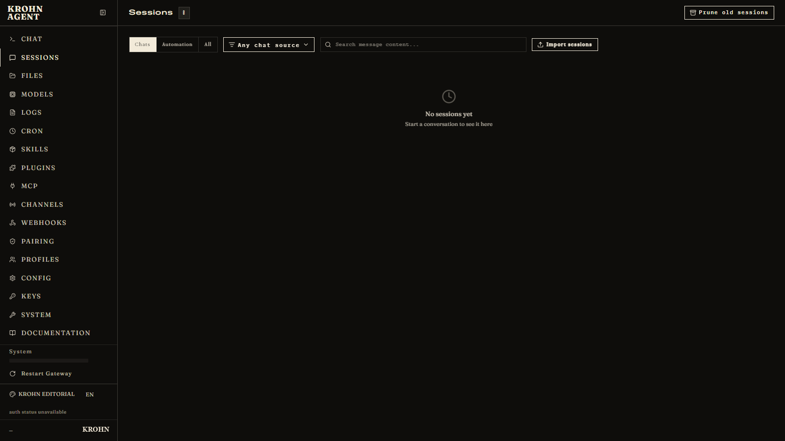
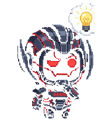
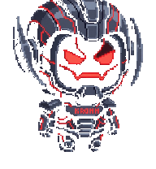
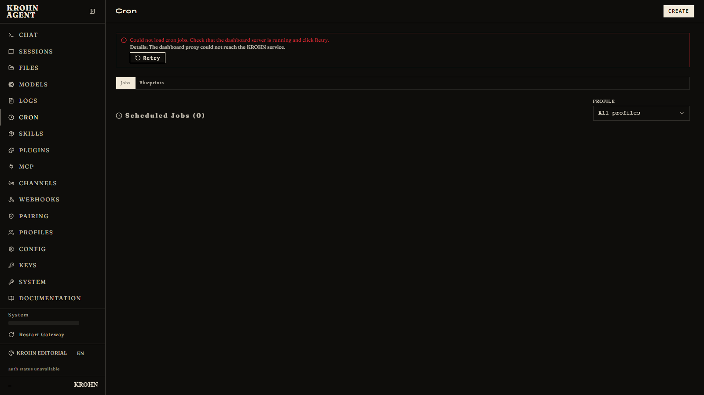

Documentación oficial · Español · MIT
Documentación de KROHN
KROHN es el primer agente que simula la conciencia: fork libre de Hermes Agent (MIT), rediseñado con identidad propia y voz española. Esta guía cubre todo lo que necesitas para instalar, configurar y extender KROHN.
v1.0.0 · Windows 10/11 · MIT
KROHN Desktop 1.0 — la app real, captura local
Instalar en Windows
Descarga el instalador desde Releases y ejecútalo. KROHN prepara Python, Node, pnpm y sus dependencias vía PM (pinned, hash-verificado). Sin Node previo ni certificados de administrador.
iex (irm https://github.com/pureform132/krohn/raw/master/scripts/install.ps1)
El instalador vive en %LOCALAPPDATA%\krohn; tu estado en %LOCALAPPDATA%\krohn\krohn_home. No se escribe fuera de tu perfil.
Primer arranque y proveedores
En el primer arranque KROHN te pedirá elegir un modelo. Deja que él decida o elige uno directamente.
DeepSeek
Rol agente principal; alto valor por token. DEEPSEEK_API_KEY
Google Gemini
Amplio catálogo y 1M de contexto. GOOGLE_API_KEY / GEMINI_API_KEY
NVIDIA NIM
Catálogo abierto y modelos razonadores. NVIDIA_API_KEY
OpenRouter
Un endpoint para casi todos los modelos. OPENROUTER_API_KEY
Local · Ollama / LM Studio
Sin cuenta ni coste; local por completo.
Nous Portal
Provider del proyecto aguas arriba (opcional). krohn auth
Uso básico
krohn # TUI interactiva krohn -q "¿qué hora es?" --oneshot krohn desktop # app nativa Electron krohn gateway # Telegram, Discord, Slack… krohn cron # programador en lenguaje natural krohn model # cambiar proveedor/modelo krohn doctor # diagnóstico
La mascota Ultrón (Desktop)
KROHN Desktop incluye una mascota Ultrón chibi de arte propio: un sprite animado que vive en la ventana (o en tu escritorio) y reacciona en tiempo real a lo que hace el agente — ejecutar una herramienta, razonar, cometer un error, terminar una tarea.
 RUN · herramienta
RUN · herramienta

WAVE · al aviso
JUMP · tarea lista WAIT · aprobación
WAIT · aprobación
 FAILED · tool error
FAILED · tool error
Cómo se usa
- Ajustes → Mascota → activar. El spritesheet se descarga del gateway (
pet.info); no requiere red extra. - La mascota sigue el estado real del turno:
runningal empezar una herramienta,reviewal razonar,failedsi una herramienta falla,jumpal completar el turno ywaitingsi KROHN espera tu aprobación. - Shift + clic sobre la mascota la convierte en una ventana flotante del escritorio: siempre visible, arrastrable con el ratón, y persiste entre reinicios. Mayús + rueda cambia su tamaño.
- Ajustes → Mascota → Mover al escritorio alterna ese modo sin tocar la ventana principal.
- Si no te apetece verla, desactívala: la mascota es 100% opt-in y no altera el agente en nada.
El spritesheet y su manifiesto viven en el repo: packaging/pets/krohn-ultron-chibi/ (pet.json + spritesheet.png, formato 9 filas × 8 columnas, celdas 192×208).
config.yaml y .env
El estado vive en %LOCALAPPDATA%\krohn\krohn_home\config.yaml; los secretos, en .env del mismo directorio. Configura proveedores, mcp_servers, temas y transporte por plataforma.
Proveedores
41 backends disponibles. Lista completa en plugins/model-providers/: Anthropic, OpenAI, Bedrock, Azure, Ollama, DeepSeek, Gemini, Vertex, NVIDIA, Nous (Hermes 3/4/5) y más.
Skills
44 core + 141 opcionales en optional-skills/. Las skills son conocimiento procedural escrito por el propio agente; se activan por intención del usuario o por manejo explícito con /skills.
MCP
66 presets en optional-mcps/ (GitHub, Datadog, Sentry, Figma, Atlassian, Linear, Supabase, Stripe…). Conectar uno: añade a config.yaml → mcp_servers.nombre con command o url.
Gateways y mensajería
Una pasarela sirve 26 plataformas: Telegram, Discord, Slack, WhatsApp, Signal, Matrix, Teams, email, SMS, IRC, Line, WeChat… Voice memo transcripción, continua entre dispositivos y entrega programada — todo sin salir del loop.
Cron y kanban
Programa tareas diarias con lenguaje natural. Los resultados llegan por cualquier plataforma o se guardan en %LOCALAPPDATA%\krohn\krohn_home\cron\.
Subagentes
Delega tareas aisladas (cada una con su worktree), providers, regímenes de aprobación y cuotas propias. Desktop → Settings → Model → Subagents.

Cron en lenguaje natural — “cada viernes a las 15:00”
Seguridad y sandbox
Sandbox por defecto, aprobación humana antes de cualquier acción externa, logs auditables, write-approval, path-security, sandbox_scope. KROHN jamás toca nada externo sin tu confirmación cuando la acción sale del entorno.
FAQ
¿La tienda de plugins está activa?
No. KROHN no ofrece plugins de terceros por defecto. Los que quieras, instálalos por carpeta plugins/. El catálogo se activará solo cuando exista uno propio verificado.
¿Se actualiza solo?
No. El feed de auto-update fue desactivado. Tú decides cuándo y qué actualizar.
¿Mis datos se envían a Nous Research?
No. KROHN es un fork MIT sin telemetría ni afiliación con Nous Research. El modelo que elijas procesa tus prompts; lo demás no sale de tu equipo salvo decisión explícita.
Licencia y atribución
MIT — ver LICENSE. KROHN deriva de Hermes Agent © Nous Research, publicado bajo MIT. Atribución completa en NOTICE.md. KROHN no está afiliado ni con Nous Research ni con OpenAI, Google, Anthropic, NVIDIA o DeepSeek.